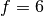

Usage Examples¶
In this page some examples about using WaveDec and WaveDecActive. Examples are found in the folder WaveDec/examples.
The maximum likelihood estimates of the parameters are found in the files LoveWaves.csv and RayleighWaves.csv or appropriate output files.
The M2.1 SESAME synthetic dataset (ambient vibrations)¶
This synthetic dataset was developed within the SESAME project. The M2.1 model corresponds to a structural model of a layer over half-space. Several sources are present and the ambient vibrations wavefield is analyzed using recordings from an array of 14 triaxial sensors. The dataset is also analyzed and discussed in [Maranò_et_al_2012].

Fig. 30 The 14 sensors array layout.¶ |
{kind=link}
Analysis of Rayleigh waves using WaveDec leads to the identification of dispersion and ellipticity curves for the fundamental and the first higher mode. In the figures below, the green line shows the theoretical values computed with the propagator-matrix method.

Fig. 32 Rayleigh wave ellipticity angle, fundamental mode.¶ |
|

Fig. 33 Rayleigh wave wavenumber, first higher mode.¶ |
{kind=link}
{kind=link}
Download the SAC input files from here. Extract the files from the compressed archive.
$ cd WaveDec/examples/01_SESAME_M2.1 $ WaveDec.py
Warning
The SESAME files are generated assuming the vertical z axes pointing downward (i.e., positive sign of the signal implying downward motion). This is the opposite of what is assumed
by WaveDec and by most of the seismic instrumentation. As a result, the estimated ellipticity angle values have opposite sign of the intended one (prograde and retrograde particle motion are exchanged).
You may wish to see how the results differ by allowing or not WaveDec to model the lack of waves. Set ModelNoise to true or false. See also Model selection: Love wave, Rayleigh wave, or nothing?.
The Brigerbad dataset (ambient vibrations)¶
{kind=link}
Fig. 35 Overview of the Brigerbad array¶
This is a dataset from a ambient vibrations survey collected in Switzerland. The dataset is analyzed and discussed in [Maranò_et_al_2012].
Download the SAC input files from here. Extract the files from the compressed archive.
The folder contains three configuration files corresponding to three different processing strategies. In config_LoveAndRayleigh.yaml both Love and Rayleigh wave are processed together.
In config_LoveOnly.yaml and config_RayleighOnly.yaml only one wave type is processed.
To analyze solely Love waves we run
$ cd WaveDec/examples/02_Brigerbad $ WaveDec.py --config_file=config_LoveOnly.yaml
Output is saved in the folder ./LoveOnly/.
Tip
Our experience shows that it is better to model both Love and Rayleigh waves in the same analysis. See [Maranò_et_al_2017a] for details.
Zurich Airport (active and passive)¶
This is a dataset from an active survey collected in Switzerland. In the picture, yellow dots mark the sensors and red stars mark shooting locations. The dataset is also analyzed and discussed in [Maranò_et_al_2017a] and [Maranò_et_al_2017b].
{kind=link}
Download the SAC input files from here. Data for solely one shooting location is provided in the download.
The configuration file config_5Rayleigh.yaml is already set to process Rayleigh waves. The configuration file contains information about the source position and the timing of the twelve shots considered. We observed that the parameter gamma plays an important role in the analysis of active seismic surveys.
The code for the analysis of circular wavefront is used, i.e. WaveDecActive.py.
In order to quickly see all the traces and each shot, type
$ cd WaveDec/examples/03_ZurichAirport_Active $ WaveDecActive.py --config_file=config_5Rayleigh.yaml --plot
In order to perform the actual processing run
$ cd WaveDec/examples/14_ZurichAirport_Active $ WaveDecActive.py --config_file=config_5Rayleigh.yaml
Debugging examples¶
The examples in this section are provided for the sake of verifying the functioning of the software and any future modification. They can also be used to understand limitations of the algorithm in a controlled environment.
To print more console output, showing the functioning of WaveDec you may want to increase the verbosity as
$ WaveDec.py --verbosity 2
The wavefield is composed of seismic waves and additive Gaussian noise. Seismic waves are ideal as in the mathematical model used beyond the development of WaveDec. The synthetic wavefield is specified in a YAML file, whose syntax is not documented.
Plane waves (translational motions)¶
The plane wavefront assumption is used in this section. This is the assumption commonly used in the processing of ambient vibrations.
A single Love wave¶
In this example, a synthetic wavefield containing a single Love wave is analyzed. The configuration file config.yaml specifies the file OneLove.yaml as INPUT. This latter file specifies the synthetic wavefield and its syntax is not documented here.
Change directory to the folder contains the examples.
$ cd WaveDec/examples/11_OneLoveWave/ $ WaveDec.py --verbosity 2
With the increased output verbosity we can get insights on the functioning of the algorithm. Notice that it is attempted to fit a second wave but such model is rejected as in the wavefield there is a single wave.
Look at the output file LoveWaves.csv to see the value of the estimated parameters.
A single Rayleigh wave¶
This example is similar to the previous one, but a Rayleigh wave is present instead of a Love wave.
$ cd WaveDec/examples/12_OneRayleighWave/ $ WaveDec.py --verbosity 2
A single vertical wave¶
This example is similar to the previous ones. A plane wave measured solely at the vertical component is measured and modeled.
$ cd WaveDec/examples/13_OneVerticalWave/ $ WaveDec.py --verbosity 2
Two Love and Two Rayleigh waves¶
In this example, the synthetic wavefield specified in TwoLoveTwoRayleigh.yaml consists of the superposition of two Love and two Rayleigh waves at the same frequency.
This example is akin to an example discussed in [Maranò_et_al_2012].
The synthetic wavefield is described in the file TwoLoveTwoRayleigh.yaml. All waves are at the same frequency . There are two Love and two Rayleigh waves with the following parameters:
The first Love wave has amplitude
 , wavenumber , and azimuth
, wavenumber , and azimuth The second Love wave has parameters , ,
The first Rayleigh wave has amplitude , wavenumber , azimuth
 , and ellipticty angle (circular polarization, prograde particle motion)
, and ellipticty angle (circular polarization, prograde particle motion)The second Rayleigh wave has parameters , , ,
In addition, it is added Gaussian white noise with variance .
We run WaveDec using the following command
$ cd WaveDec/examples/14_TwoLoveTwoRayleigh $ WaveDec.py
We can look at the output files LoveWaves.csv and RayleighWaves.csv to verify that the wavefield parameters are correctly estimated.
$ cat LoveWaves.csv # WaveDec output file for Love waves # MODEL_LOVE # Frequency Amplitude Wavenumber Velocity Azimuth # [Hz] [a.u.] [1/m] [m/s] [rad] 6.000e+00 7.992e-01 4.005e-02 1.498e+02 5.498e+00 6.000e+00 2.002e-01 4.003e-02 1.499e+02 3.142e+00 $ cat RayleighWaves.csv # WaveDec output file for Rayleigh waves # MODEL_RAYLEIGH # Frequency Amplitude Wavenumber Velocity Azimuth EllipticityAngle # [Hz] [a.u.] [1/m] [m/s] [rad] [rad] 6.000e+00 9.021e-01 3.002e-02 1.999e+02 7.861e-01 7.823e-01 6.000e+00 6.996e-01 3.004e-02 1.997e+02 1.569e+00 7.848e-01
Multiple frequencies¶
In this example, two Love and two Rayleigh waves are present. But they are at two different frequencies.
$ cd WaveDec/examples/15_MultipleFrequencies $ WaveDec.py
Tricky interference¶
In this example, one Love wave and one Rayleigh wave are present. The wave parameters are chosen in order to create a difficult scenario:
Love wave azimuth is
Rayleigh wave azimuth is . The ellipticty angle is
 (horizontal polarization)
(horizontal polarization)
With these parameters both waves have all of their energy solely on the  axis (East-West component). Rayleigh wave has no energy on the vertical component.
axis (East-West component). Rayleigh wave has no energy on the vertical component.
In addition,
Both waves propagate at the same frequency and with the same velocity ( Hz and )
Rayleigh wave amplitude is and Love wave amplitude is
It is added white Gaussian noise with variance
To run the code we do the following
$ cd WaveDec/examples/16_TrickyInterference $ WaveDec.py
Looking at the output files, we see that –despite the tricky setup– the wave parameters are retrieved correctly
$ cat LoveWaves.csv # WaveDec output file for Love waves # MODEL_LOVE # Frequency Amplitude Wavenumber Velocity Azimuth # [Hz] [a.u.] [1/m] [m/s] [rad] 6.000e+00 9.963e-02 2.980e-02 2.013e+02 1.565e+00 $ cat RayleighWaves.csv # WaveDec output file for Rayleigh waves # MODEL_RAYLEIGH # Frequency Amplitude Wavenumber Velocity Azimuth EllipticityAngle # [Hz] [a.u.] [1/m] [m/s] [rad] [rad] 6.000e+00 1.002e+00 3.000e-02 2.000e+02 1.299e-03 1.568e+00
Plane waves (translational and rotational motions)¶
These examples showcase the joint analysis of translational and rotational motions. Including the use of single six-components (6C) sensors. The theory and algorithm were developed in [Maranò_et_al_2014]. The following examples use simple synthetic wavefield to verify the correct functioning of the WaveDec.
Warning
It is important that the translational and rotational input files are consistent with the equations for translational and rotational motions presented in the Section Rayleigh wave. In practice, it is necessary that translational and rotational measurements are both in velocity (i.e. and ). Alternatively, both type of measurements are in acceleration, i.e. and .
A single Love wave (single 6C sensor)¶
The wavefield is composed of a single Love wave and is measured with a single six-components sensors.
We run WaveDec with no arguments, so that the default configuration file config.yaml is used
$ cd WaveDec/examples/21_OneLoveWaveSingle6cSensor $ WaveDec.py
After the processing is completed, we can check the output file LoveWaves.csv and read the parameters of the estimated Love wave.
$ cat LoveWaves.csv # WaveDec output file for Love waves # MODEL_LOVE # Frequency Amplitude Wavenumber Velocity Azimuth # [Hz] [a.u.] [1/m] [m/s] [rad] 6.000e+00 1.001e+00 2.032e-02 2.953e+02 7.847e-01
The true parameters for the Love wave were set in the input file OneLoveRotationalSensor.yaml which was read by WaveDec and used to generate the synthetic wavefield. The output file for Rayleigh waves is empty, since no Rayleigh waves are present in the wavefield.
$ cat RayleighWaves.csv # WaveDec output file for Rayleigh waves # MODEL_RAYLEIGH # Frequency Amplitude Wavenumber Velocity Azimuth EllipticityAngle # [Hz] [a.u.] [1/m] [m/s] [rad] [rad]
A single Rayleigh wave (single 6C sensor)¶
The wavefield is composed of a single Rayleigh wave and is measured with a single six-components sensors. The
$ cd WaveDec/examples/22_OneRayleighWaveSingle6cSensor $ WaveDec.py
The estimated parameters are found in the RayleighWaves.csv output file
$ cat RayleighWaves.csv # WaveDec output file for Rayleigh waves # MODEL_RAYLEIGH # Frequency Amplitude Wavenumber Velocity Azimuth EllipticityAngle # [Hz] [a.u.] [1/m] [m/s] [rad] [rad] 6.000e+00 9.986e-01 2.007e-02 2.989e+02 7.867e-01 -7.035e-01
A single Rayleigh wave (single 6C sensor) - Difficult case¶
We repeat the case with a single Rayleigh wave measured with a single six-components sensor.
We choose the ellipticity angle , corresponding to a wave with horizontal polarization. The other wave parameters are amplitude , wavenumber , and azimuth .
All the energy of the Rayleigh wave is on the horizontal translational components. The Rayleigh wave does not generate any rotational motion. Compare with the equations in Section Rayleigh wave.
As usual we run WaveDec
$ cd WaveDec/examples/23_OneRayleighWaveSingle6cSensor_Difficult $ WaveDec.py
We look at the output file and see that the estimated parameters are wrong!
$ cat RayleighWaves.csv # WaveDec output file for Rayleigh waves # MODEL_RAYLEIGH # Frequency Amplitude Wavenumber Velocity Azimuth EllipticityAngle # [Hz] [a.u.] [1/m] [m/s] [rad] [rad] 6.000e+00 9.999e-01 4.939e-02 1.215e+02 3.927e+00 -1.570e+00
The estimated wavenumber is wrong, in fact, since there is no energy on the rotational components, it is not possible to estimate this parameter using solely the translational components from a single sensor. We may also speculate that when the ellipticity angle is close to (and therefore there is very little energy on the rotational components) it will be difficult to estimate the wavenumber. For more details, see our publication [Maranò_et_al_2014].
We also observe that the estimated azimuth and the ellipticty angle are incorrect. Do you know why?
Two Love and Two Rayleigh waves (6C array)¶
The synthetic wavefield is described in the file TwoLoveTwoRayleigh.yaml. All waves are at the same frequency . There are two Love and two Rayleigh waves with the following parameters:
The first Love wave has amplitude
, wavenumber , and azimuth The second Love wave has parameters , ,
The first Rayleigh wave has amplitude , wavenumber , azimuth
, and ellipticty angle (circular polarization, prograde particle motion)The second Rayleigh wave has parameters , , ,
In addition, it is added Gaussian white noise with variance .
We run WaveDec using the following command
$ cd WaveDec/examples/23_TwoLoveTwoRayleigh6cArray $ WaveDec.py
We can look at the output files LoveWaves.csv and RayleighWaves.csv to verify that the wavefield parameters are correctly estimated.
$ cat LoveWaves.csv # WaveDec output file for Love waves # MODEL_LOVE # Frequency Amplitude Wavenumber Velocity Azimuth # [Hz] [a.u.] [1/m] [m/s] [rad] 6.000e+00 7.992e-01 4.005e-02 1.498e+02 5.498e+00 6.000e+00 2.002e-01 4.003e-02 1.499e+02 3.142e+00 $ cat RayleighWaves.csv # WaveDec output file for Rayleigh waves # MODEL_RAYLEIGH # Frequency Amplitude Wavenumber Velocity Azimuth EllipticityAngle # [Hz] [a.u.] [1/m] [m/s] [rad] [rad] 6.000e+00 9.021e-01 3.002e-02 1.999e+02 7.861e-01 7.823e-01 6.000e+00 6.996e-01 3.004e-02 1.997e+02 1.569e+00 7.848e-01
Circular wavefront (active seismic)¶
These examples showcase the modeling of a seismic wave in the proximity of the source. Circular wavefront and amplitude decay are accounted for. This scenario is useful in active seismic. The theory and algorithm were developed in [Maranò_et_al_2017b]. Only translational motions are analyzed.
These examples use the executable file WaveDecActive.py (and not WaveDec.py as above).
As customary in active seismic, the source position is known and it is specified in the configuration file.
A single Rayleigh wave with circular wavefront¶
In this example, a synthetic wavefield containing a single Rayleigh wave with circular wavefront is analyzed. The configuration file config.yaml specifies the file OneCircularRayleigh.yaml as INPUT. This latter file specifies the synthetic wavefield and its syntax is not documented here.
$ cd WaveDec/examples/31_CircularRayleighWave/ $ WaveDecActive.py
A single vertical wave with circular wavefront¶
This example is similar to the previous one. A plane wave measured solely at the vertical component is measured and modeled.
$ cd WaveDec/examples/32_CircularVerticalWave/ $ WaveDecActive.py
Two Rayleigh waves with circular wavefront¶
In this example, the wavefield is composed of two Rayleigh waves with circular wavefront. The waves propagate from the same source and have a different velocity. This setting imitates the presence of two modes and the wave superposition is accounted for.
$ cd WaveDec/examples/33_TwoCircularRayleigh/ $ WaveDecActive.py